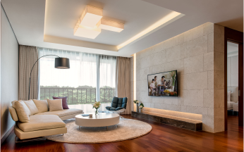
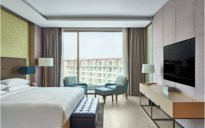
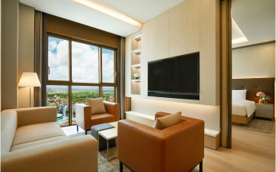
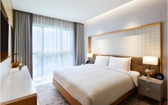

숙박을 뛰어넘는 경험... 제주의 신(新) 랜드마크
기사는 더 이상 이미지와 텍스트만의 몫은 아닙니다. '인터렉티브 시리즈'는 다양한 분야의 이슈를 영상·이미지·인포그래픽 등을 통해 보도하는 코너입니다.
실제로 경험하고 느낀 밀착형 정보를 하나의 디지털 콘텐츠로 정리해 생생한 현장의 느낌을 독자 여러분과 나누고자 합니다.「편집자주」
최근 일본, 베트남, 필리핀 등에 카지노를 포함한 대형 리조트 이슈가 이어지며 복합 리조트(Integrated Resort)에 대한 관심이 그 어느때보다 높아졌다. 복합리조트란 풀서비스의 숙박시설과 레저·스포츠 시설, 게임 시설, F&B(식음료 매장), 쇼핑몰 등을 선택적으로 포함하고 있어 다양한 목적의 관광을 충족할 수 있다. 매력적인 문화 랜드마크로서 복합리조트에 대한 관광객들의 선호도는 늘어나는 추세다.
이 같은 흐름에 맞춰 제주에 대한 인식도 바뀌고 있다. 지난해 제주관광공사의 내국인 관광객 실태조사에 따르면 휴양·휴식 자체가 이유라는 답은 2019년 17.4%에서 2022년 41.0%로 크게 늘었고 미식탐방·숙박·쇼핑에 대한 관심도 급부상했다.
제주의 청정 자연은 물론 테마파크 불꽃놀이와 라이트쇼를 보며 맥주잔을 기울일 수 있는 곳이 있다. 제주의 신(新) 랜드마크를 표방하는 국내 최대 규모의 복합리조트, '제주신화월드' 이야기다. 약 2000여개의 객실, 다양한 부대시설과 미식(美食)으로 제주의 명소로 주목받고 있다.
제주신화월드에 처음 발을 디딘 사람은 일단 규모에 압도된다. 서귀포시 안덕면 제주신화역사공원에 세워진 이곳은 리조트 부지만 여의도 면적의 절반이 넘는 250여만㎡에 달한다. 4개의 호텔 브랜드과 뷔페·레스토랑을 비롯한 40여개의 식음 매장, 워터파크·테마파크 등 모든 것을 원스톱으로 즐길 수 있는 이른바 '하나의 작은 도시'다. 이에 명품 브랜드가 입점한 신세계 프리미엄전문점 등을 더해 제주 내 다른 리조트에서 보기 힘든 매력을 갖췄다. 특히 밤 시간에 딱히 즐길 만한 것이 없는 제주에서 최대 밤 12시까지 이용할 수 있는 다양한 부대시설은 이곳의 가장 큰 장점이자 매력 요소다.
IT 기업에서 팀장으로 근무 중인 임범수(42)씨는 잦은 야근에 지쳤다. 이렇게 흘러가는 대로 살 수는 없다고 생각한 그는 회사에 이틀 휴가를 내고 가족과 함께 제주도로 떠났다. 하지만 공항에서 "제주야 반갑다"를 외치기도 전에 "날씨가 왜 이러지?"란 말이 나올 만큼 비바람이 몰아친다. 첨단 장비를 동원한 일기예보도 빗나가는 경우가 허다할 만큼 '5분 간격'으로 변한다는 변덕스러운 제주의 날씨다. 여행 기간 내내 호텔 방에만 있다가 올 수도 있는 불운한 상황이지만 그는 상관 없다. 날씨가 좋으면 제주의 명소를 즐기고, 날씨가 나쁘면 숙소인 제주신화월드의 다양한 시설을 이용하면서 시간을 보낼 생각이다.
하지만 워낙 많은 시설이 있어 자칫하면 길을 잃을 수도 있다. 여름 휴가 시즌을 맞아 이용에 도움이 될만한 정보를 찾아 제주신화월드 구석구석을 돌아봤다.
풀옵션 콘도부터 5성급 호텔까지
규모의 강점은 폭넓은 선택권에 있다. 여행 스타일과 취향에 따라 선택할 수 있도록 각기 다른 매력을 가진
4개의 호텔 브랜드를
운영하고 있다.
제주신화월드 서머셋(이하 서머셋)은 객실 면적이 154m²(46평)에 달하는 대형 콘도다. 3개의 침실과 2개의 욕실, 거실과 다이닝 룸을 갖췄고 최대
9명(성인 5인, 어린이 4인)까지 머물 수 있다. 대형 냉장고, 식기세척기, 세탁기, 와인셀러 등 스마트 가전제품이 완비되어 있고 전 세대에 테라스가
있어 쾌적한 곶자왈의 자연을 즐길 수 있다.
-  서머셋
-  메리어트관
-  신화관
-  랜딩관
하이엔드 고객을 위한 메리어트관은 세계 최대 호텔 체인으로 CEO의 집무실을 연상케 하는 스위트 라인업이 대표적이다. 성산일출봉을 모티브로 설계된 '모실' 클럽하우스도 무료로 이용할 수 있다. 가족 여행객에 특화된 신화관은 야외 정원 ‘코트야드’와 인피니티 풀인 ‘스카이풀’ 등 편의시설을 두루 갖췄다. 워터파크와 직접 연결되어 있으며 투숙객은 무료로 입장할 수 있다.
랜딩관은 높은 가성비를 자랑한다. MICE 및 비즈니스 수요를 겨냥한 객실은 심플한 베이지톤 가구와 간접 조명을 사용해 편안한 분위기를 극대화했다. 서머셋을 제외한 나머지 호텔은 'ㄷ'자로 연결되어 있어 내부로 도보 이동할 수 있다.
테마파크·워터파크…제주에선 '한 번'에 즐긴다
제주신화월드는 국내 리조트 중 유일하게 실내외 워터파크와 테마파크를 동시에 보유하고 있다. 인기 애니메이션 '라바'의 테마로 만들어진 신화테마파크는 10여종의
놀이기구와 어트랙션으로 구성됐다. 로터리 파크, 라바 어드벤처 빌리지, 오스카 뉴월드 등 3가지 테마를 바탕으로 VR 체험관, 아이들을 위한 퍼포먼스
스테이지가 있다.
라바의 이미지 때문에 어른용 놀이기구가 없다고 생각할 수 있지만 360도 회전하는 원형 바이킹 '오스카 스핀 앤 범프', 360도 회전 롤러코스터 '댄싱
오스카' 등은 스릴을 즐기기에 좋다.
제주 최대 규모의 신화워터파크는 13종의 풀과 257m 길이의 '슈퍼 크리퍼 코일', 순간 시속 40km 쾌감을 느낄 수 있는 '자이언트 더블리프' 등 다양한 워터슬라이드를 즐길 수 있다. 실내에는 익스트림 파이프 등 물놀이 기구와 어른들을 위한 전신 마사지 기능의 바데풀과 샌드 캐슬 스파, 릴렉싱 스파가 있다.
밤이 되면 제주의 나이트라이프에 대한 물음표가 느낌표로 바뀐다. 야경을 바라보며 연인과 함께 스카이풀에서 피곤을 풀고 S BAR와 락 볼링장에서 맥주와 볼링을 즐기며 색다른 제주의 밤을 보낼 수 있다. 이외에도 매주 금, 토, 일요일 신화테마파크 앞에서 화려한 불꽃놀이과 원더라이팅이 어우러지는 불꽃쇼가 펼쳐진다.
제주의 신선한 식재료로 선보이는 미식
여행에 있어 미식(美食)은 선택이 아닌 필수다. 하지만 나름 유명하다는 식당에 들러 갈치회, 오분자기 뚝배기 등에 젓가락을 대고 난 뒤 계산서를 확인하면 소위
눈탱이 맞은('바가지 썼다'의 속된 표현) 느낌을 받은 경험이 있을 것이다.
친구와 제주신화월드를 찾은 김민서(38·서울)씨는 "제주에서 갈치구이 한 끼만 먹어도 두 사람이면 7만원이 넘고 흑돼지나 회도 비싸다"며 "신화리워드 멤버십
할인도 받을 수 있는 호텔 뷔페에서 여러 가짓수의 음식과 함께 맥주·와인을 무제한으로 즐기는 게 오히려 합리적"이라고 말했다.
이곳은 40여개의 레스토랑이 있어 입맛과 분위기에 따라 음식과 주류를 즐길 수 있다. 셰프가 직접 철판에 흑돼지를 구워 오마카세 스타일로 내는 '제주선 더 블랙', 제주의 멋진 풍경을 감상하며 육류·주류를 무제한으로 즐길 수 있는 그릴 뷔페 '스카이 온 파이브 다이닝', 신선한 해산물과 많은 가짓수의 음식이 있는 인터내셔널 뷔페 '랜딩다이닝', 지역 향토요리를 기반으로 한 정통 이탈리안 레스토랑 '라 벨라' 등이 있다.
변화무쌍한 제주 날씨, 변수(變數)가 가져다 준 기회
제주의 날씨 예보는 대체로 맞고 대체로 틀리다. 흐리다 해도 구름 사이로 햇빛이 부서지고, 맑다 해도 하늘 한쪽에 갑자기 짙은 구름이 덮이곤 한다. 그 날씨 변덕은 때로는 어렵게 마련한 여행객의 돈과 시간을 위협한다.
지난해 12월, 오랜만에 가족과 함께 휴가를 보내기 위해 제주로 떠났다. 하지만 예고 없이 찾아온 역대급 추위와 폭설로 항공기 수백여 편이 결항되는 등 도착한지 하루 만에 제주에 발이 묶인 상황이 됐다. 제설작업도 원활하지 않아 약간만 경사가 있어도 쌓인 눈 때문에 차 바퀴가 스키처럼 미끄러졌다.
근처 편의점도 가기 어려워 망연자실하며 비자발적 격리생활을 떠올리던 그때, 비로소 우리 가족은 '국내 최대 규모의 복합 리조트'의 진면목을 체감했다. 온전히 숙소 안에서 레스토랑, 실내 온수풀, 락 볼링장, 쇼핑센터 등 다양한 시설을 즐기면서 날씨 덕에 꼼짝없이 버려질 수 밖에 없던 시간을 빈틈 없는 여정으로 채울 수 있었다. 물론 머릿속에 막연히 맴돌던 제주 이주의 꿈은 이때 싹 달아났다.
이처럼 인생은 늘 계획대로 흐르지 않고 변수(變數)를 동반한다. 그렇다고 그 변수가 항상 실패의 원인이 되는 것은 아니다. 변수는 새로운 기회가 된다. 지난 겨울 제주의 폭설을 통해 생각지 못했던 새로운 경험을 한 것처럼 말이다.